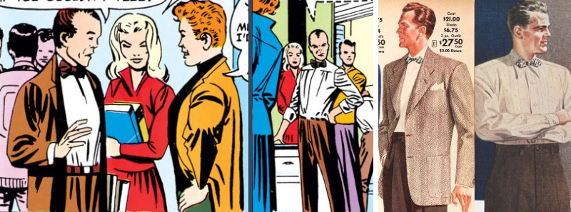
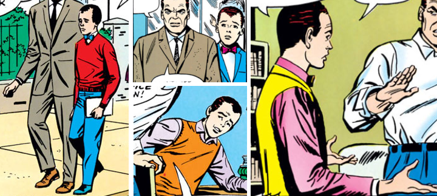

I’m no expert in menswear (all info + photo examples come from VintageDancer) but the way Harry Osborn's clothes choices evolve throughout the silver age of Spider-Man fascinates me from both a meta and a characterization standpoint.
Harry first shows up in ASM #31. He has an outdated look even for the time: the bowtie, brown/grey color scheme, and wide high-waisted pants with a skinny belt are all kind of 1940s/50s things. Not to mention the similarly old-fashioned hair.
It seems Ditko’s vision for Harry was an insufferable stuck-up dweeb, a Norman Junior. You know those eerie photos of politicians’ families where the kids are dressed as tiny equally conservative versions of their parents? Yeah.
Of course, once Ditko jumps ship and characterization catches up, Harry's desire (and failure) to copy his dad are going to become pretty important. As will, to a lesser degree, his belief in imaginary "good old days".
John Romita arrives in ASM #39 and the next issue gives us a flashback to baby Harry, who in contrast to his dad looks like an easter egg.
On a practical level, bright colors (1) draw attention to Harry as a new main character and (2) conveys the passage of time. But it also fits with this issue's reveal that he’s actually a naturally sweet kid, just trying too hard to impress a brutally insensitive role model.
I like that Ditko's bow tie sticks around. It has old-fashioned, dweeby connotations (as probably originally intended) but it also has very appropriate oddball performer connotations.